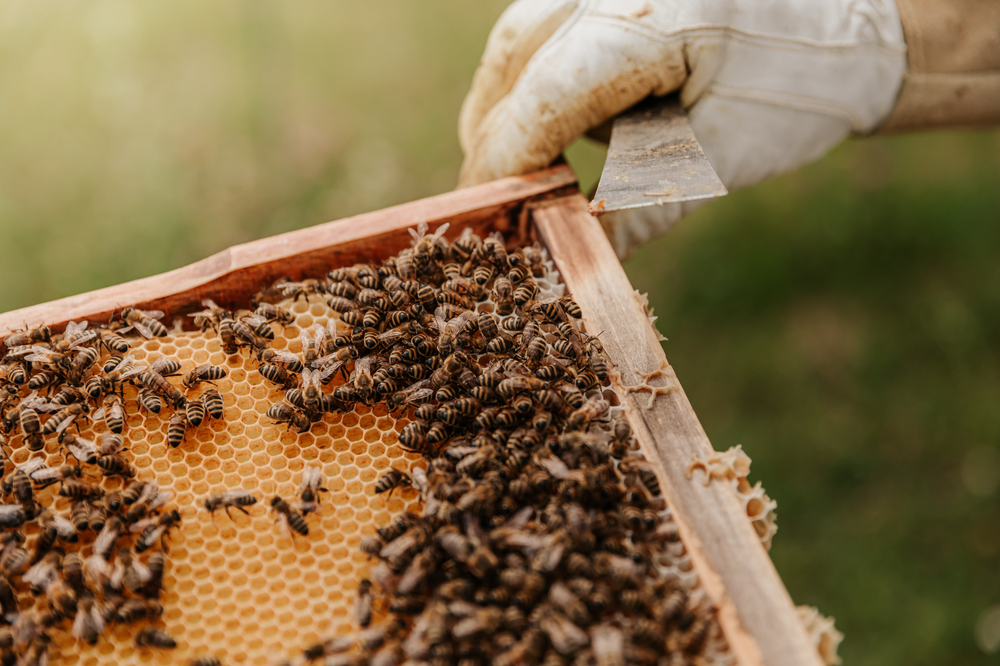

“Пчелите са толкова малки и често не ги забелязваме, но всъщност животът ни, такъв какъвто го познаваме, зависи от тях и тяхната работа. Йерархията в кошера, трудолюбието на малките създания, сладкият мед в който превръщат нектара на растенията – всичко това е вдъхновявало и продължава да вдъхновява хората да се възхищават на пчелите.”
Тези малки животни са безценни за хората. Със своята усърдна работа те постигат невероятни неща и са едни от най-важните работещи животни по света. Тяхната най-важна задача е да опрашват растенията. Без тази безплатна услуга на пчелите, ние ще трябва да живеем без около една трета от нашите храни.